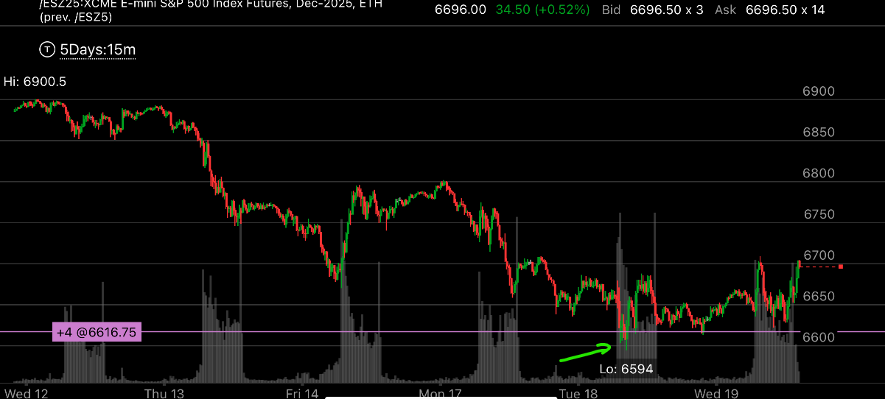
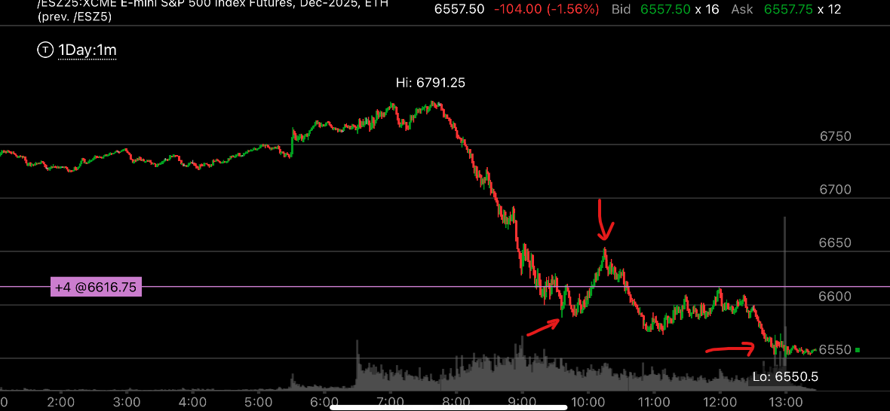
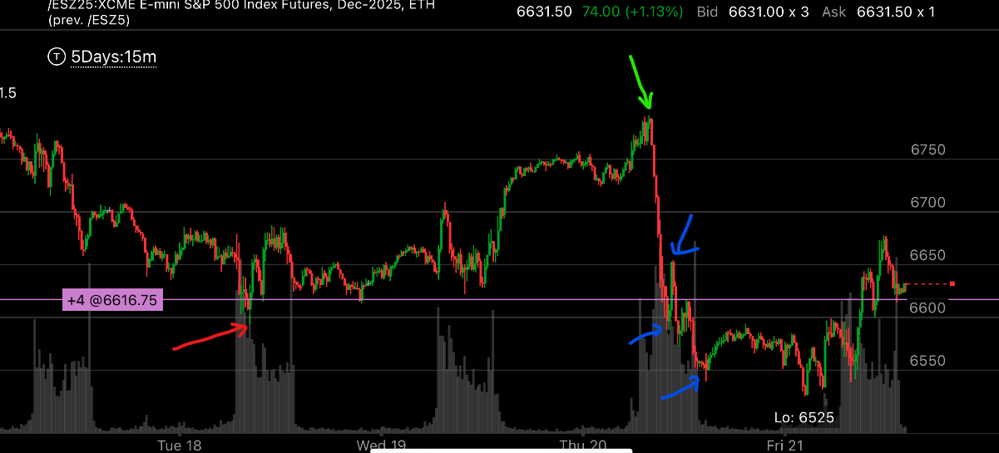
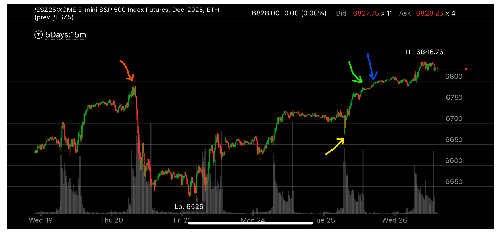

尖锐---抹平走势
- 无论是上涨还是下跌，大盘常常会突破前面的高点或者低点，快速拉回，形成了一个尖锐的点，然后再次越过这个点，走平很久。
这是一个典型的底部或者顶部特征。
- 但是，如果更大走势是相反走势，那么这个走势就不起作用。

图示:绿色是前面的低点，也就是这次反弹最低点

图示:这个是1分钟图。 大盘冲高，然后大幅走低。先打破前面的低点，然后快速反弹。这是第一个红色箭头。
第二个红色箭头是反弹的点。第三个红色箭头是再次走低后的走平的点。

图示:这个是15分钟图。
- 红色箭头，第一天，前面的最低点。
- 绿色箭头，冲高的高点。
- 蓝色箭头1，当天突破前面的红色箭头低点，形成了加速下跌。
- 蓝色箭头2，突破低点后，反弹的高点。因为这个必然会再次探底，所以如果前面已经做多，应该卖掉，在更低点买回来
- 蓝色箭头3， 在更低点走平，这样说明了大盘形成了一个底部。
- 从红色箭头，到蓝色箭头3，也形成了反弹更高，下跌更低，加速下跌的走势。这样形成了更大的底部

图示:和大势相反走势的情况，这时应该服从大势。
- 红色箭头，第一天，前面的高点，这个是加速下跌走势
- 绿色箭头，突破前面红色高点，立刻拉回
- 蓝色箭头，突破绿色箭头高点，拉平，形成了尖锐拉平走势
- 黄色箭头，形成了向上加速上涨，结果也没有反转。而是继续上涨。